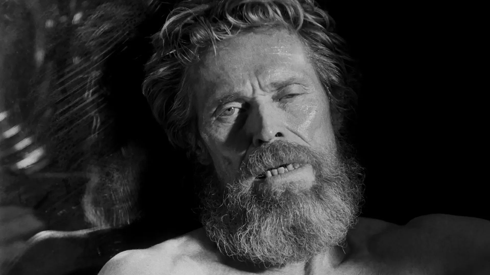

I’m so glad we finally got a live-action remake of the Spongebob episode where Spongebob and Squidward take the night shift at the Krusty Krab and confront the Hash-Slinging Slasher
As the wavering cry of the foghorn fills the air, the taciturn former lumberjack, Ephraim Winslow, and the grizzled lighthouse keeper, Thomas Wake, set foot in a secluded and perpetually grey islet off the coast of late-19th-century New England. For the following four weeks of back-breaking work and unfavourable conditions, the tight-lipped men will have no one else for company except for each other, forced to endure irritating idiosyncrasies, bottled-up resentment, and burgeoning hatred. Then, amid bad omens, a furious and unending squall maroons the pale beacon's keepers in the already inhospitable volcanic rock, paving the way for a prolonged period of feral hunger, excruciating agony, manic isolation, and horrible booze-addled visions. Now, the eerie stranglehold of insanity tightens. Is there an escape from the wall-less prison of the mind?